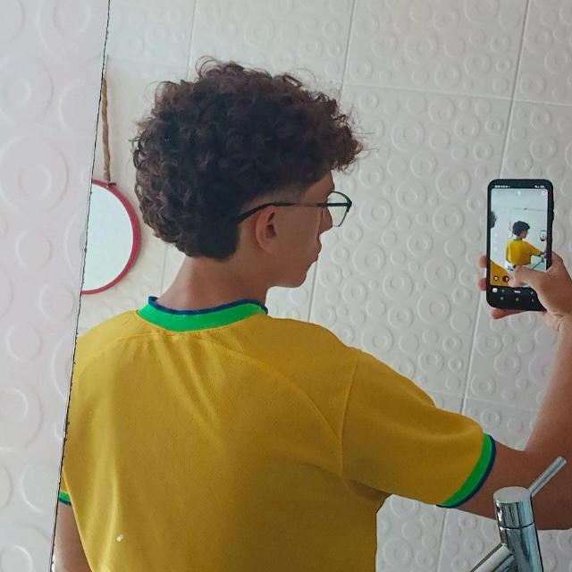
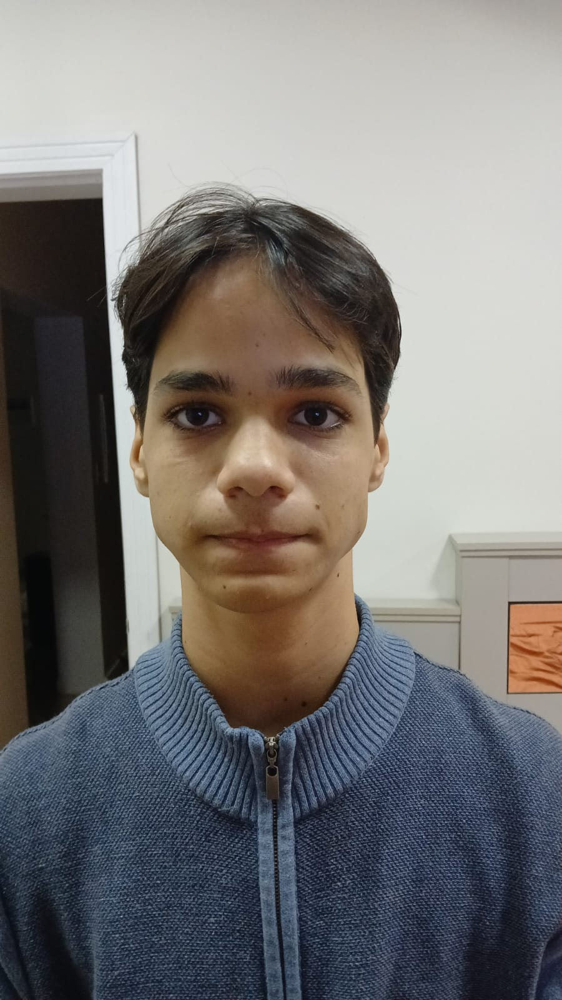
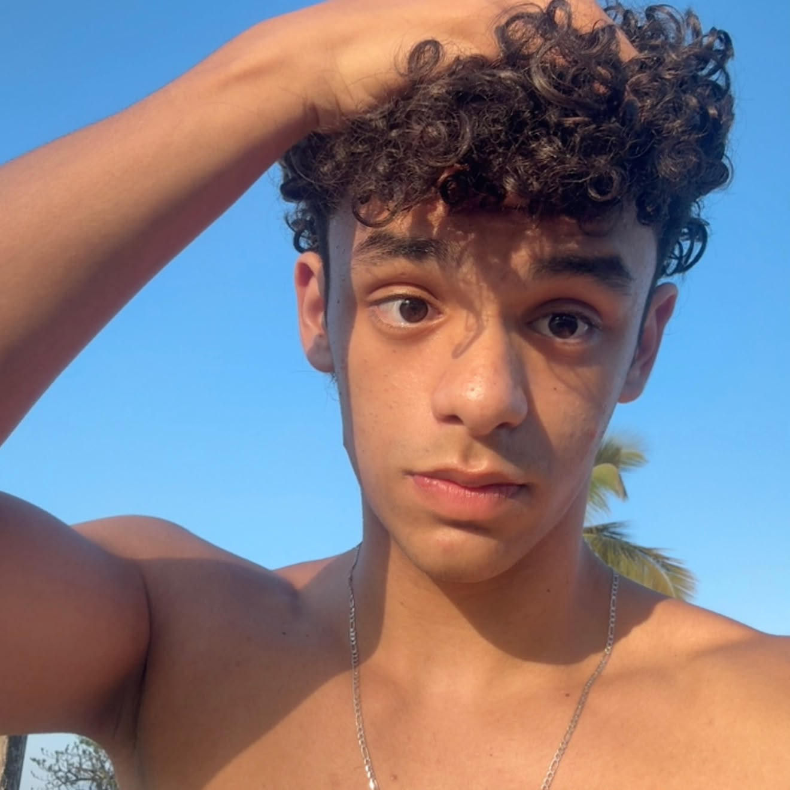

Esse site foi feito por três alunos do 1º E.M. do IF de
Caraguatatuba
João Guilherme Silva Lino
(Scrum Master)

@joaogsl16
João Vitor Abila de Lima
(Desenvolvedor 1)

@jv.abila
Lucas Pietro dos Santos
(Desenvolvedor 2)

@olucaspietro
Os alunos do 1º ano do Ensino Médio Integrado ao Curso Técnico em
Informática desenvolveram este projeto com o objetivo de colocar
em prática os conhecimentos adquiridos ao longo das aulas. Durante
o desenvolvimento, foram aplicados conceitos relacionados à
programação, desenvolvimento web, estruturação de páginas,
estilização de elementos, organização de conteúdo e navegação
entre diferentes seções e páginas.
A realização deste trabalho proporcionou aos alunos a oportunidade
de transformar os conteúdos estudados em uma aplicação prática,
permitindo compreender de forma mais aprofundada como diferentes
tecnologias podem ser utilizadas em conjunto para a construção de
um site. Além da parte técnica, o projeto também envolveu aspectos
como planejamento, organização das tarefas, divisão de
responsabilidades, resolução de problemas e trabalho em equipe.
Para a construção da página, foram utilizados recursos de HTML,
CSS, JavaScript e Tailwind CSS, além de ferramentas relacionadas
ao desenvolvimento e versionamento do projeto. Cada integrante
contribuiu em diferentes etapas do processo, desde a elaboração da
estrutura e definição do conteúdo até a implementação,
estilização, testes e ajustes finais.
Dessa forma, o projeto representa não apenas a aplicação dos
conhecimentos adquiridos durante o curso, mas também uma
experiência prática de desenvolvimento, permitindo aos alunos
aprimorar suas habilidades técnicas, criatividade, organização e
capacidade de trabalhar em equipe. O resultado é uma página
desenvolvida de forma colaborativa, reunindo os conhecimentos
estudados em sala de aula e demonstrando, na prática, parte das
competências desenvolvidas ao longo do curso técnico.